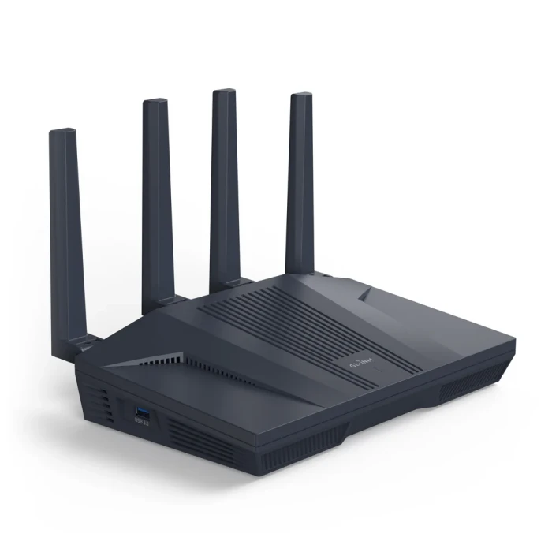
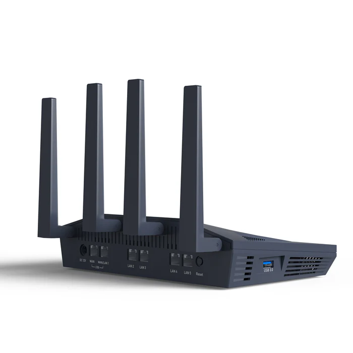

Hey! Listen! This post is part of a series on using OpenWrt. Check them all out!
| Date | URL | Part |
|---|---|---|
| 2026-05-23 | A dead-simple OpenWrt setup on the Flint 2 | OpenWrt simple setup |
| 2024-02-06 | Beryl travel router with OpenWrt | OpenWrt revisited |
| 2016-04-28 | OpenWrt upgrade process | OpenWrt upgrade |
| 2015-08-26 | OpenWrt with OpenVPN server on TP-Link Archer C7 | Initial post |
| 2015-02-15 | OpenWrt with OpenVPN client on TP-Link TL-MR3020 | Initial post |
Introduction
We’re moving house this year, and there is going to be a period of about a month or so where we own both houses. Before the big move, I’m going to move my home office setup myself and work from the new house. I don’t plan on moving my entire homelab setup until the big move, so this means that I’m going to need a temporary router at the new house so that I can work.
Hardware
As I said in my last post:
The trick with OpenWrt is to not get hardware that is too old (because it will have bad specs and be slow), but also not get something that is too new (because it won’t be supported yet).
For this temporary setup, I just need an all-in-one router/switch/WAP. I went back to GL.iNet to see what they offered, and after doing some reading online, found the Flint 2. There is a newer Flint 3, which has WiFi 7 (802.11be) and 6GHz support, but it isn’t yet supported by OpenWrt (whereas the Flint 2 is listed in the Table of Hardware).


Setup
Install OpenWrt
OpenWrt has two kinds of installations:
- installing from vendor firmware (called a factory installation)
- upgrading OpenWrt (called a sysupgrade)
Because the Flint 2 already ran a version of OpenWrt from GL.iNet, I needed to do a sysupgrade. The installation process was pretty simple, and I’ve summarized the steps from the wiki page for the Flint 2:
- On my desktop, I went to the OpenWrt Firmware Selector to download the
sysupgradefile, and verified thesha256hash of the file - Connected to the Flint’s LAN port (which after booting, gave me an IP in the
192.168.8.xrange) - Browsed to http://192.168.8.1/, found the firmware update page, and uploaded the
sysupgradefile - Waited 2 mins, and rebooted into OpenWrt at https://192.168.1.1/!
Configure OpenWrt
Initial login
Navigate to https://192.168.1.1/ in your browser and you’ll be greeted by an SSL error. This is because the web interface uses a self-signed certificate out of the box. It’s safe to click through this, since your traffic is encrypted and you know the certificate is from the router (or you can browse to http://192.168.1.1/ without HTTPS).
Moving on. Leave the username as “root” and the password field empty.

Click on Log in to continue and you’ll see the status page. Right away, you’ll need to choose whether to check for firmware updates. We’re not online yet, but it doesn’t hurt to click on Yes here.

Click on Save & Apply.

Set a password
From the main status page, we’re going to set a root password by using the link in the yellow box at the top of the page. Here, you can (and should) set a root password. Click on Save to continue.

You can now SSH into the router with those credentials.
> ssh root@192.168.1.1
root@192.168.1.1's password:
BusyBox v1.37.0 (2026-05-13 22:42:09 UTC) built-in shell (ash)
_______ ________ __
| |.-----.-----.-----.| | | |.----.| |_
| - || _ | -__| || | | || _|| _|
|_______|| __|_____|__|__||________||__| |____|
|__| W I R E L E S S F R E E D O M
-----------------------------------------------------
OpenWrt 25.12.4, r32933-4ccb782af7 Dave's Guitar
-----------------------------------------------------
OpenWrt recently switched to the "apk" package manager!
OPKG Command APK Equivalent Description
------------------------------------------------------------------
opkg install <pkg> apk add <pkg> Install a package
opkg remove <pkg> apk del <pkg> Remove a package
opkg upgrade apk upgrade Upgrade all packages
opkg files <pkg> apk info -L <pkg> List package contents
opkg list-installed apk info List installed packages
opkg update apk update Update package lists
opkg search <pkg> apk search <pkg> Search for packages
------------------------------------------------------------------
For more information visit:
https://openwrt.org/docs/guide-user/additional-software/opkg-to-apk-cheatsheet
Basic setup
First, set a hostname for the device and reboot.
uci set system.@system[0].hostname='OpenWrt_Flint2'
uci commit system
reboot
Now, we’re going to tell the web UI to redirect from HTTP to HTTPS.
uci set uhttpd.main.redirect_https='1'
uci commit uhttpd
service uhttpd restart
SSH is listening on all interfaces (LAN and WAN), but I prefer to only be able to SSH via the LAN interface. Use the commands below to change that.
uci set dropbear.@dropbear[0].Interface='lan'
uci commit dropbear
service dropbear restart
Next, we’re going to set Google and Cloudflare as upstream DNS servers.
uci set network.lan.dns='8.8.8.8 1.1.1.1'
uci commit network
service network restart
This is optional, but I like the set the firewall to silently DROP traffic (just ignore it), instead of setting it to REJECT (replying to the source that traffic was denied).
uci set firewall.@defaults[0].input='DROP'
uci set firewall.@defaults[0].forward='DROP'
uci set firewall.@zone[1].input='DROP'
uci commit firewall
service firewall restart
You can use the command uci show wireless | grep band to see how many WiFi radios you have. The Flint 2 has two, and radio1 is the 5GHz radio. I’m going to enable and setup my WiFi as 5GHz only (radio1).
root@OpenWrt_Flint2:~# uci show wireless | grep band
wireless.radio0.band='2g'
wireless.radio1.band='5g'
Next, we need to enable the correct radio and change the country code (adjust as needed).
uci set wireless.radio1.disabled='0'
uci set wireless.radio1.country='US'
uci commit wireless
wifi reload
service network restart
Now, setup a SSID and password. In this case, sae-mixed is for a WPA2/WPA3 mixed setup.
uci set wireless.default_radio1.ssid='Your_SSID_goes_here'
uci set wireless.default_radio1.key='abcd1234'
uci set wireless.default_radio1.encryption='sae-mixed'
uci set wireless.default_radio1.disabled='0'
uci commit wireless
wifi reload
service network restart
Conclusion
This setup is dead-simple. It provides DHCP, DNS, secure firewall, and 5GHz WiFi. It’s perfect for my month-long temporary setup, but if I were doing this long-term, I’d change more (VLANs, dual-band WiFi, WiFi channel width, etc…). Overall, I’m happy with this and hope it serves me well!
-Logan